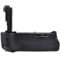

EOS 5D Mark III专用电池盒兼手柄。其外观尺寸约153.1×114.5×85.3毫米（宽×高×厚），重量约为310克（不包含电池及电池夹）。内部可安装1块或2块LP-E6锂电池，或是安装6节5号电池，能够放心进行长时间拍摄。除了竖拍用快门按钮外，还搭载了多功能控制钮和多功能自定义按钮，可实现与横拍相同的操作感。而且外壳采用了和机身相同的镁合金。通过对各部分实施密封处理，具备和相机同等